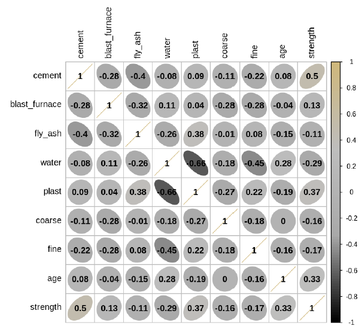
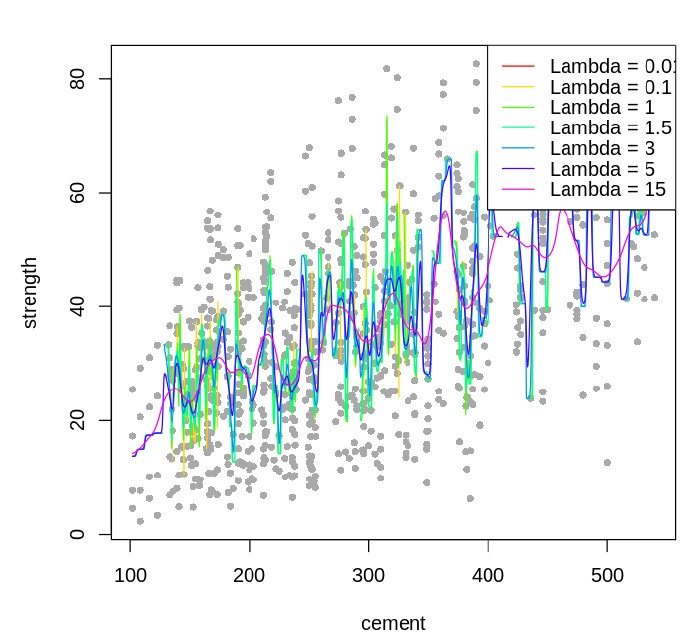

Introduction
Concrete is one of the most vital materials in civil engineering, and its compressive strength is a critical property. This project investigates the nonlinear relationship between the compressive strength of concrete and its components, such as cement, blast furnace slag, fly ash, water, superplasticizer, coarse aggregate, and fine aggregate, using R programming.
Data Preparation and EDA
- Dataset: Contains 1,030 observations with variables representing concrete components and age.
- Exploratory Analysis: Conducted distribution analysis, boxplots, and pairwise scatter plots to understand variable relationships and detect outliers.
- Key Insights: Variables like cement and age show linear relationships with compressive strength, while others exhibit nonlinear patterns.
Statistical Analysis
T-Tests
Hypotheses Tested: Differences in compressive strength based on age (<=3 days vs. >=28 days) and presence of blast furnace slag. Both tests revealed statistically significant differences in means.
F-Test
The F-test showed that at least one predictor variable significantly impacts compressive strength, prompting regression modeling.
Regression Modeling
Multiple Linear Regression: Initial model included all predictors, followed by backward selection to refine the model. Final predictors: cement, blast furnace slag, fly ash, water, and age.
Adjusted R²: 59.2%, indicating moderate explanatory power but highlighting potential for better models.
Advanced Models
Generalized Additive Models (GAM): Applied to capture complex, nonlinear relationships between predictors and response. Final model explained 89.2% of variability, significantly improving prediction accuracy.
Key Findings
- Significant predictors include cement, blast furnace slag, and age.
- Nonlinear relationships were effectively captured using GAM.
- GAM outperformed linear regression in accuracy and explained variance.
Visualizations
Various plots were used to analyze relationships and validate model assumptions:
- Observed vs. Predicted Values
- Residual Diagnostics
- Scatter Plots for Cement and Age
Here are some of the visualizations generated during the analysis:
Figure: Diagnostics plots
Figure: Correlation plot
Figure: Generative Additive Model fitting for varying lambda
Conclusion
This project demonstrates the importance of advanced modeling techniques like GAM for predicting compressive strength in highly nonlinear data. These insights can be applied to optimize concrete mixtures for construction projects.
Explore the Code
The complete code and methodology are available on my GitHub repository. Feel free to explore!
View on GitHubb